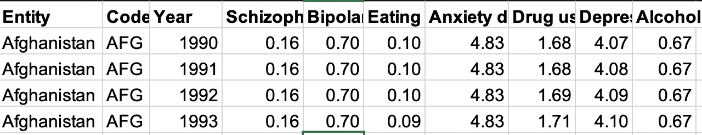
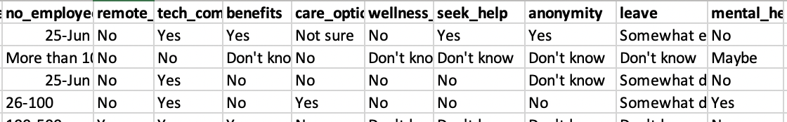
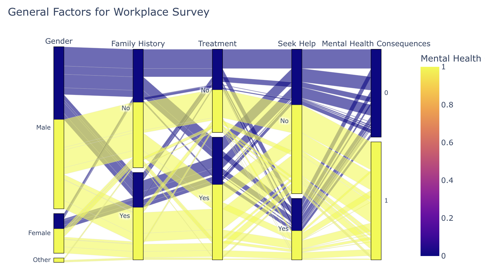

Mental Health Analytics
The goal of this study was to create awareness and allow people to realize the importance of their mental well being. Gaining insights into the data will help people make concious choices which will lead to productivity in their day to day activities.

The famous Satire X of the Roman poet Juvenal exclaims "mens sana in corpore sano" (a healthy mind in a healthy body), which is the first thing he mentions when writing a poem about what is most desirable in life. Since ages it has been proven that mental well being leads to a happier and healtheir life. Keeping this in mind I decided that it is important to equip people with facts so that they can make informed decision to improve their mental health. Hence, the domain of interest of this study is mental health; in which the focus of the study will be to analyze trends of causes leading to mental health concerns. The problem that will be investigated will be as to what personal, professional, educational and geographical factors affect people with mental health concerns based on collection of data from various parts of the world form 1990 - 2017.
Datasets
The first dataset includes the pervalance of seven different kinds of Disorders (Alcohol, Drug, Eating Disorder, Schizophrenia, Bipolar Disorder, Depression and Alcohol Use. Dataset is obtained from Institute for Health Metrics and Evaluation (IHME), which is an independent global health research center at the University of Washington
The second dataset is a Tech Survey csv file containing responses from over 1200 people. The data includes categorical variables such as (Yes, No, Don't know) regarding their employment, family, and mental health concerns. The source of this dataset is from OSMH (formerly OSMI). Open Sourcing Mental Health is a non-profit, 501(c)(3) corporation dedicated to raising awareness, educating, and providing resources to support mental wellness in the tech and open source communities.
Correlation Between Substance Use and Mental Disorders
Looking at graph we can see the following continents: Europe, Africa, North America, South America, and Oceanic follow a weak positive correlation between depression and alcohol disorders. As the country's depression level goes up the alcohol percentage is also slightly increasing. As a result we can conclude that Alcohol has minimal effect on one's mental health.
On this graph we are comparing Drug-use Disorder and Depression across all the countries (grouped by continents) between 1990-2017 and see how they relate to one another. Looking at trends for all the continents, we can see a strong positive correlation between Drug use and Anxiety disorders. As the country's Drug use goes up , prevalance of Anxiety Disorder is also increasing. As a result, we can suggest that government policies can focus more on drug use policies to decrease anxiety rates among people.
Personal and Workplace Factors Affecting Mental Health

Analyzing both Parallel Category Graph above we can infer the following:
From the two parallel categories graph, we have visualized the various factors that may be responsible for the deteriating
mental health of any individual in both the personal and the professional setting. From the graphs we can see that the work related
factors affect the mental health much more than the personal factors. Work Environment factors like ease of getting a leave or having a
supervisor in the workpace lead to much lesser mental health concerns. On the other other hand irrespective of the prior family history or
previous treatments seeked, the prevelance of mental health issues remain consistent through both the possibilities.
50% of all genders suffered some kind of mental health consequence out of which the majority did not "seek help"
from their supervisor.
From the results we can recommend employers to invest more in their wellness programs. Second we can encourage supervisors to create a non-judgemental environment
where all genders can share their mental health concerns without being afraid of being judge by their supervisors.